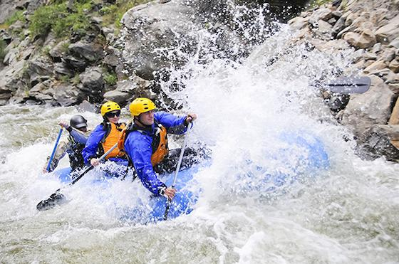
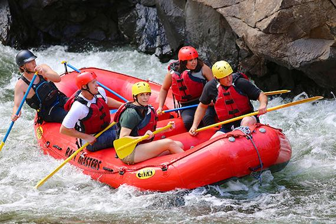
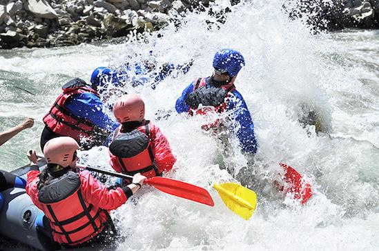

Half Day Adventure
A three-hour introduction to white water rafting, built for first-timers and families. Covers a mix of calm stretches and easy rapids, with a snack break on a riverside sandbank.
Every trip is led by a local guide and includes safety equipment, a full briefing, and a story you'll be telling long after the water dries.

A three-hour introduction to white water rafting, built for first-timers and families. Covers a mix of calm stretches and easy rapids, with a snack break on a riverside sandbank.

Our signature trip covers the river's most exciting stretch, including Los Dientes del Diablo and Big Mallard. Lunch on the water is included, and prior rafting experience is recommended.

A relaxed evening float along the calmest stretch of the Kavango River, timed to end just as the sun drops behind the riverbank. A favorite for couples and casual paddlers.
| Trip | Duration | Difficulty | Price (N$) | Departs |
|---|---|---|---|---|
| Half Day Adventure | 3 hours | Beginner | 450 | 8:00 AM |
| Full Day Expedition | 7 hours | Advanced | 950 | 7:00 AM |
| Sunset Paddle | 2 hours | Beginner | 350 | 4:30 PM |
| Los Dientes del Diablo | 4 hours | Intermediate | 600 | 9:00 AM |
| Big Mallard | 5 hours | Advanced | 750 | 8:30 AM |
Not sure which trip is right for you? Reach out and our team will help you find the perfect route.
Contact Us